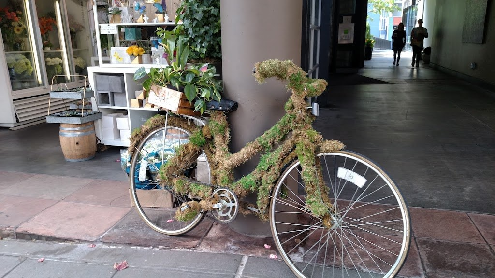
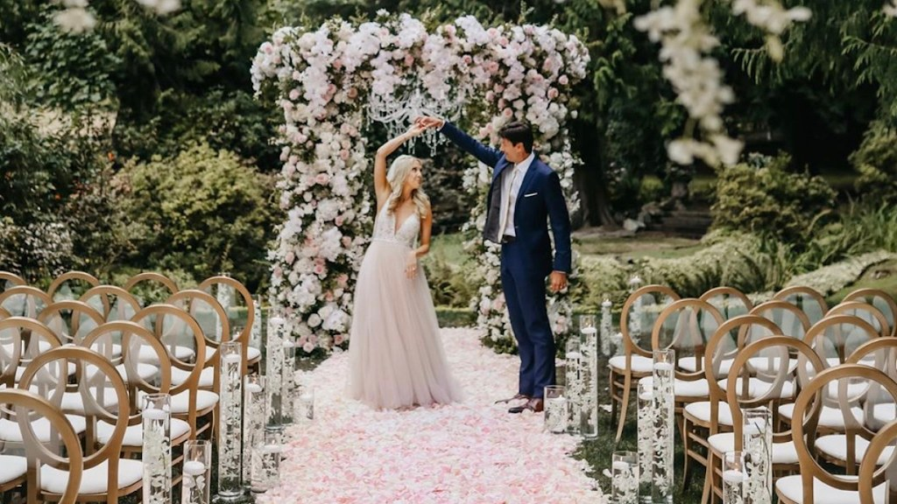
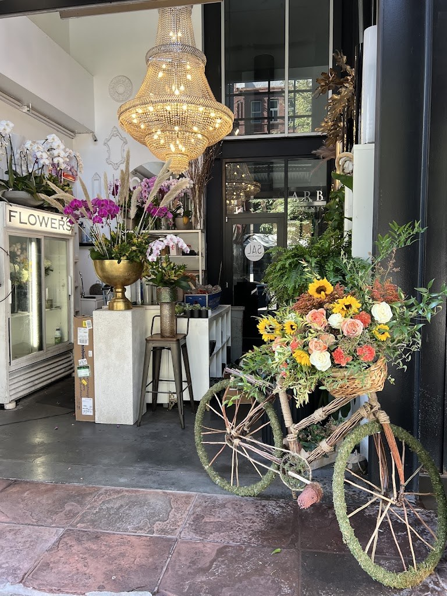

Downtown Seattle Florist, 1st Ave
Flowers for every day in downtown Seattle
A florist in downtown Seattle: fresh flower delivery, bouquets for birthdays, weddings, anniversaries, corporate gifts, and sympathy, plus bridal bouquets, boutonnieres, and event design and setup.

Fresh flower delivery across Seattle. Open Monday through Friday 10:00 AM to 6:00 PM, closed Saturday and Sunday. Call (206) 954-8963.
What Sal Floral Design makes
Birthday bouquets
Bouquets made for birthdays, delivered fresh across Seattle.
Wedding flowers
Bridal bouquets and boutonnieres, with event design and setup for the day.
Anniversary bouquets
Bouquets made for anniversaries, delivered fresh across Seattle.
Corporate flowers
Bouquets for corporate gifts and occasions.
Sympathy flowers
Bouquets for sympathy, delivered fresh across Seattle.
Event design and setup
Event design and setup, so the flowers are in place for the occasion.
Weddings and events
Sal Floral Design makes bridal bouquets and boutonnieres and designs and sets up flowers for events, so the flowers at a wedding or a corporate gathering are handled from the first bouquet to the last table.

Gallery

All three photos are real photos from the business's Google Maps listing: a moss-covered bicycle outside the shop, with a crate of plants; the shop entrance with a large crystal chandelier, a FLOWERS cooler, and a gold vase of magenta orchids; and a bride and groom under a wedding arch decorated with greenery and white flowers.
Visit
Address: 1219 1st Ave, Seattle, WA 98101
Hours: Monday through Friday, 10:00 AM to 6:00 PM; Saturday and Sunday closed.
Phone: (206) 954-8963
Contact
Sal Floral Design serves Seattle, WA. Questions? Call (206) 954-8963.